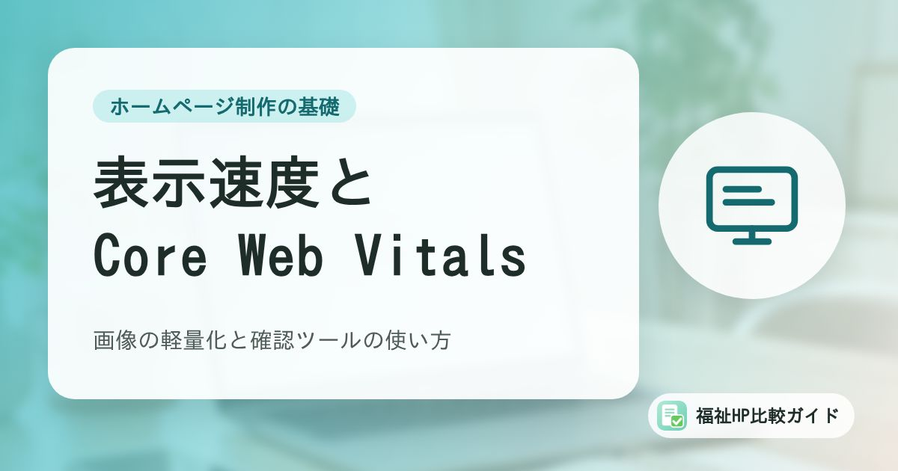

ホームページの表示速度とCore Web Vitals｜福祉事業所でもできる画像の軽量化と確認ツールの使い方

スマートフォンでホームページを開いたとき、なかなか表示されなかったり、読もうとした文章が急にずれたりすると、見る人は待たずに離れてしまいます。Googleは、こうした「使い心地」を測る指標としてCore Web Vitalsを示しています。この記事では、指標の意味と確認方法、写真の多い福祉事業所のサイトで取り組みやすい改善策を整理します。
この記事でわかること
- Core Web Vitalsの3つの指標（LCP・INP・CLS）と「良好」の目安
- PageSpeed InsightsとSearch Consoleでの確認方法と、数字の読み方の注意点
- 写真の多いサイトで効果の出やすい画像の軽量化のポイント
- 制作会社やホームページ作成サービスに確認したいこと
なぜ表示速度が大切なのか
福祉事業所のホームページは、利用を考えている本人や家族、相談支援専門員、求職者などが、スマートフォンで外出先から見ることも多いものです。表示が遅かったり、画面が急にずれて押し間違えたりすると、知りたい情報にたどり着く前に離れてしまうかもしれません。
Googleは、ページの読み込み、操作への反応、見た目の安定性という、実際のユーザーが感じる使い心地を測る指標として「Core Web Vitals（コア ウェブ バイタル）」を示しています。Google検索セントラルでは、Core Web Vitalsはほかのページ エクスペリエンスの要素とともに、Googleのランキング システムが考慮する要素だと説明されています。
速度は「順位のため」より「読む人のため」
Core Web Vitalsは検索順位に関係する要素のひとつですが、それだけで順位が決まるわけではありません。まずは、スマートフォンで見る人がストレスなく読めるかという視点で考えると、取り組む優先順位がはっきりします。
Core Web Vitalsの3つの指標と目安
| 指標 | 何を測るか | 「良好」の目安 | 身近なたとえ |
|---|---|---|---|
| LCP（Largest Contentful Paint） | 読み込みの速さ。ページ内でいちばん大きな画像や文章のかたまりが表示されるまでの時間 | 2.5秒以内 | トップの大きな写真がなかなか出てこない |
| INP（Interaction to Next Paint） | 操作への反応の速さ。タップやクリックをしてから画面が変わるまでの時間 | 200ミリ秒以下 | メニューを押しても反応が遅い |
| CLS（Cumulative Layout Shift） | 見た目の安定性。読み込み中にレイアウトがどれだけずれるか | 0.1以下 | 読んでいる途中で文章が下にずれる |
web.devでは、これらの目安を、モバイルとパソコンに分けたページ読み込みの75パーセンタイル（多くの訪問者が体験する値）で満たすことが推奨されており、3つの指標すべてで目安を満たすとページは「合格」とみなされると説明されています。
確認方法1：PageSpeed Insights
PageSpeed Insights（ページスピード インサイト）は、URLを入力するだけでページの速さを調べられるGoogleの無料ツールです。結果には、性質の違う2種類のデータが表示されます。
| データの種類 | 内容 | 使い方 |
|---|---|---|
| 実際のユーザーのデータ（フィールド データ） | Chromeを使う実際のユーザーの過去28日間のデータ（CrUX）。Core Web Vitalsの評価はこちら | 実際に訪問者が感じている状態を知る |
| 診断（ラボデータ） | 決まった条件の環境で、その場でページを読み込んで測った結果 | 何が遅さの原因になっているかを調べる |
公式の説明では、実際のユーザーのデータを表示するには十分なデータ量が必要で、公開して間もないページなどでは表示されないことがあるとされています。小規模な事業所のサイトでは、ラボデータだけが表示されることも珍しくありません。
点数だけで一喜一憂しない
ラボデータの点数は、測るたびに多少変わります。「何点か」よりも、診断の項目にどんな指摘が出ているか（画像の大きさや形式、読み込みを遅らせている要素など）を見ると、改善の手がかりになります。
確認方法2：Search ConsoleのCore Web Vitalsレポート
Search Consoleに登録している場合は、「Core Web Vitals」レポートで、サイト全体の状況をモバイルとパソコンに分けて確認できます。似たページをまとめた「URLグループ」ごとに、「良好」「改善が必要」「低速」の3段階で表示されます。
ただし、このレポートも実際のユーザーのデータにもとづくため、データ量が足りないページはレポートに表示されません。「データがありません」と表示される場合は、プロパティが新しいか、利用できるデータが不足していることが考えられます。Search Consoleの基本は「Google Search Consoleの基本」で解説しています。
効果の出やすい改善：画像の軽量化
福祉事業所のホームページは、活動の様子や建物の写真を多く使います。スマートフォンやデジタルカメラで撮った写真をそのまま載せると、1枚のデータが大きく、表示が遅くなる原因になりがちです。web.devでも、HTTP Archiveの調査をもとに、ほとんどのウェブサイトで画像はもっともリクエストの多い種類のデータだと紹介されています。
写真を載せる前のチェックリスト
| チェック項目 | 理由 |
|---|---|
| 表示する大きさに合わせて縮小してから載せている | 画面に小さく表示する写真に、大きな元データは不要 |
| 画質を少し落として保存（圧縮）している | 見た目をほとんど変えずにデータ量を減らせることが多い |
| WebPなど、軽い画像形式を使える場合は使っている | web.devでもJPEGのほか、WebP・AVIFといった形式が紹介されている |
| トップページの写真を何枚も並べすぎていない | 最初の画面の読み込みが遅くなり、LCPに影響しやすい |
| 画像に幅と高さ（width・height）を指定している | ブラウザが表示場所を確保でき、読み込み中のずれ（CLS）を防げる |
「遅延読み込み」は下の方の画像に
画面の下の方にある画像は、近くまでスクロールされたときに読み込む「遅延読み込み（loading="lazy"）」を使うと、最初の表示を軽くできます。一方、web.devでは、最初の画面に表示される画像、特にLCPにあたる画像は優先して読み込むべきだとしています。トップの大きな写真まで遅延読み込みにすると、かえって表示が遅くなることがあるので注意しましょう。
そのほかの見直しポイント
- 使っていない機能を減らす：WordPressなどで、使わなくなったプラグインや埋め込み（SNSの投稿、地図、動画など）が多いと、読み込みが重くなります
- 大きな動画の自動再生を避ける：トップページで大きな動画を自動再生すると、通信量が増えます
- 広告やポップアップでレイアウトがずれないか：後から表示される要素は、CLSの原因になりやすいです
なお、使っていないプラグインの削除や更新は、セキュリティの面からも大切です。
制作会社・作成サービスに確認したいこと
| 確認したいこと | 質問の例 |
|---|---|
| 画像の扱い | アップロードした写真は自動で縮小・圧縮されますか？ |
| 速度の確認 | 公開前にPageSpeed Insightsなどで確認していますか？ |
| 改善の範囲 | 保守契約の中で、表示速度の改善も相談できますか？ |
| 更新時の注意 | 職員が写真を載せるときに気をつけることを教えてもらえますか？ |
ホームページ作成サービスと制作会社の違いは「ホームページ作成ツールと制作会社の比較」、誰にとっても読みやすいページづくりは「福祉事業所のウェブアクセシビリティ」も参考にしてください。
まとめ
Core Web Vitalsは、読み込みの速さ（LCP）、操作への反応（INP）、見た目の安定性（CLS）という、見る人の使い心地を測る指標です。PageSpeed InsightsやSearch Consoleで状況を確認し、点数そのものより「何が遅さの原因か」を見ることが大切です。
写真の多い福祉事業所のサイトでは、写真を縮小・圧縮してから載せる、最初の画面の画像を詰め込みすぎない、といった基本的な工夫だけでも効果が期待できます。職員が写真を載せるときのルールとして共有しておきましょう。
よくある質問
PageSpeed Insightsの点数が低いと、検索順位は大きく下がりますか？
PageSpeed Insightsの点数（ラボデータのスコア）そのものが順位を決めるわけではありません。Googleは、Core Web Vitalsはほかのページ エクスペリエンスの要素とともにランキングで考慮される要素だと説明しています。点数を上げること自体を目的にせず、実際のユーザーにとって表示が遅い・ずれるといった問題がないかを確認する道具として使いましょう。
「実際のユーザーのデータがありません」と表示されます。問題ですか？
問題ではありません。実際のユーザーのデータ（CrUX）は、表示するのに十分なデータ量が必要です。公開して間もないページやアクセスの少ないページでは表示されないことがあります。その場合は、同じ画面のラボデータ（診断結果）を参考に、改善できる点を確認しましょう。
WixやJimdoなどのサービスで作ったサイトでも改善できますか？
サービス側で自動的に最適化される部分も多く、利用者が細かい設定を変えられない場合があります。それでも、写真をアップロードする前に小さくする、トップページに大きな画像や動画をたくさん並べすぎない、といった工夫は利用者側でもできます。
参考資料・出典
- web.dev「ウェブに関する主な指標（Core Web Vitals）」
- Google 検索セントラル「Core Web Vitals と Google 検索の検索結果について」
- Search Console ヘルプ「Core Web Vitals レポート」
- PageSpeed Insights「PageSpeed Insights について」
- web.dev「ブラウザレベルでのウェブ画像の遅延読み込み」
- web.dev「Learn Images」
制度・料金・統計は改定される場合があります。最新の内容は各出典の公式情報でご確認ください。